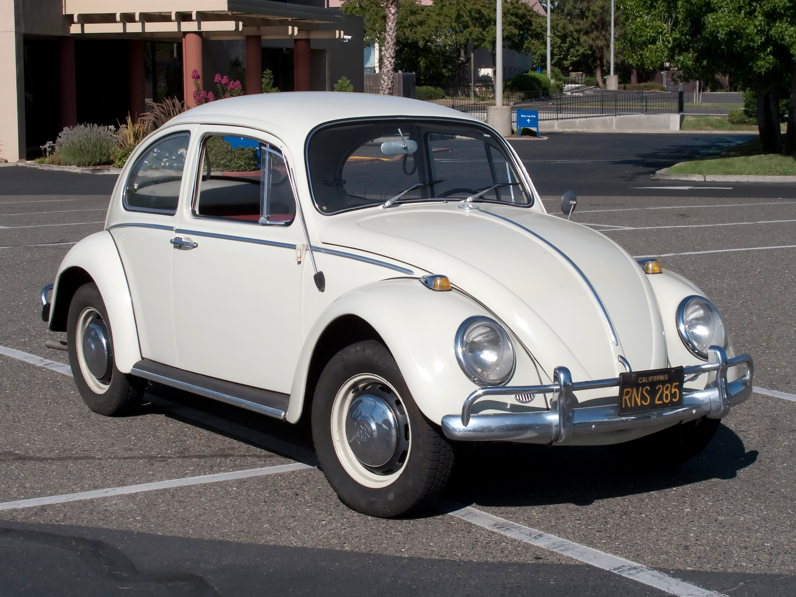
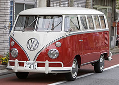

Historia Volkswagena
historia marki
historia marki
Nazwa Volkswagen oznacza samochód dla ludu. Aby sięgnąć do korzeni marki musimy się cofnąć do lat trzydziestych dwudziestego wieku. To właśnie wtedy rozpoczyna się historia koncernu, który obecnie jest jednym z najbardziej rozpoznawalnych przedsiębiorstw motoryzacyjnych na świecie.
1937-1939
1939-1945
1945-1948
1960 – 1967
1967 – 1978
1967 – 1978
Spraw sobie takie cudo
W roku 1933 Adolf Hitler zlecił skonstruowania auta, które ma być dostępne dla szerokiego grona odbiorców. W założeniu miało kosztować nie więcej jak 1000 marek, rozpędzać się do około 100 km/h oraz pomieścić pięć osób.
W 1938 roku ostatecznie zaakceptowano projekt o nazwie Type 60. 26 maja 1938 roku w mieście Fallersleben w Dolnej Saksonii odbyły się uroczystości rozpoczęcia budowy fabryki samochodu, który miał się nazywać KdF Wagen (Kraft durch Freude Wagen). Oficjalna produkcja pierwszego samochodu tej marki rozpoczęła się na początku lipca 1941 roku.
Po wojnie poteżną niemiecką firmą zainteresował się brytyjski rząd, który wykorzystał potencjał fabryki na motoryzacyjne potrzeby własnej armii. Seryjną produkcję modelu VW Kaefer (Garbus) oficjalnie rozpoczęto w grudniu 1945 roku.
Ponad 21,5 miliona wyprodukowanych egzemplarzy Volkswagena Garbusa do 2003 r., który doczekał się także kontynuacji w postaci New Beetle'a, stawiają ten model Volkswagena wśród najważniejszych w historii niemieckiej marki. Jednak Volkswagen ma w swojej historii także inne, równie popularne i ważne modele, które odegrały istotną rolę w rozwoju motoryzacji. Jednym z takich modeli jest Volkswagen Transporter (Typ 2), który po raz pierwszy ujrzał światło dzienne w 1950 r., a do dziś powstało sześć generacji tego modelu, który przyczynił się do popularyzacji segmentu pojazdów o charakterze osobowo-dostawczym.
debiut z 1973r.
Passat kombi dla wielu jest marzeniem. A egzemplarz w idealnym stanie technicznym zwykle tym marzeniem pozostaje - mimo wielu ofert, znalezienie zadbanego Passata to prawie cud.


W 1933 roku Porsche poznał Adolfa Hitlera. Przywódca III Rzeszy zażyczył sobie, aby inżynier stał się nadwornym konstruktorem ówczesnych Niemiec i stworzył prawdziwy samochód dla ludu.
Cywilne KdF-wageny z lat 1941-1944 po II wojnie światowej uznano za prototypy, pomimo, że niczym nie różniły się od pierwszych powojennych Volkswagenów Garbusów.
Po zakończeniu wojny zakłady produkujące KdF-a miały być zlikwidowane, ale rozpoczęto w nich produkcję na potrzeby armii brytyjskiej, a miasto, w którym znajdowała się fabryka przemianowano na Wolfsburg. KdF zmienił nazwę na Volkswagen, a Wolfsburg stał się centrum tego koncernu na lata.

Volkswagen Garbus
Volkswagen Transporter (Typ 2)
Dane techniczne:
Pojemność skokowa: 1093 cm³
Typ silnika: benzynowy
Moc silnika:60 KM (44 kW) przy 6000 obr/min
Liczba cylindrów: 4
Liczba drzwi: 3
Liczba miejsc: 5
Rodzaj skrzyni: manualna
Liczba biegów: 4
Rodzaj napędu: na przednią oś
Prędkość maksymalna: 140 km/h
Średnie spalanie: 8.5 l/100km
Waga: 750kg


Footer